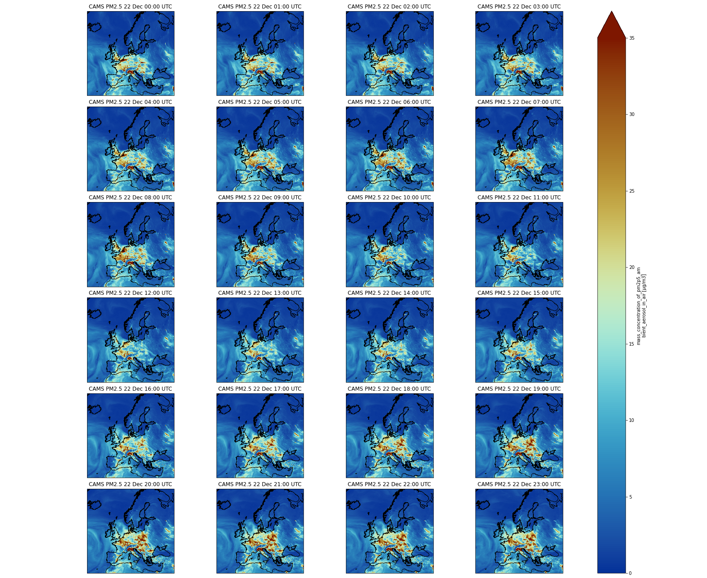

Pangeo Notebook in Galaxy - Introduction to Xarray
 Anne Fouilloux
Anne FouillouxOverview
Questions:Objectives:
What is Pangeo notebook?
How to start Pangeo Notebook in Galaxy?
What are the main software components of the Pangeo ecosystem?
What is Xarray?
How to manipulate Xarrays?
How to print metadata information?
How to make a selection?
How to visualize?
How to filter?
How to make reduction operations (mean, max, min)?
How to resample my data?
Where to go next?
Requirements:
Learn to get metadata information using Xarray Galaxy Tools
Learn to select data
Learn to visualize data
Learn to filter, make reduction operations (mean, max, min)
Learn to resample my data
Learn to cite and contribute to Pangeo
- Introduction to Galaxy Analyses
- Foundations of Data Science
- Introduction to Python: tutorial hands-on
- Foundations of Data Science
- Plotting in Python: tutorial hands-on
- Advanced Python: tutorial hands-on
- Data Carpentry Geospatial Workshop
Time estimation: 1 hourSupporting Materials:Last modification: Feb 18, 2022
 Questions:
Questions:
comment This is best viewed in Pangeo Jupyter Lab
Create a history
hands_on Hands-on: Create history
- Make sure you start from an empty analysis history.
- Rename your history to be meaningful and easy to find. For instance, you can choose Xarray with Pangeo notebook as the name of your new history.
Upload CAMS PM2.5 data
Data can be retrieved directly from Copernicus Atmosphere Monitoring Service but to make it easier, you can download the tutorial data from Zenodo.
hands_on Hands-on: Data upload
- Create a new history for this tutorial
Import the files from Zenodo or fromthe shared data library (
GTN - Material->Climate->Pangeo Notebook in Galaxy - Introduction to Xarray):https://zenodo.org/record/5805953/files/CAMS-PM2_5-20211222.netcdf- Rename the dataset to CAMS-PM2_5-20211222.netcdf
- Check that the datatype is netcdf
Starting Galaxy Pangeo JupyterLab
hands_on Hands-on: Launch Pangeo notebook JupyterLab in Galaxy
Currently Pangeo notebook in Galaxy is available on useGalaxy.eu only. Make sure you login to Galaxy and search for Pangeo notebook and not the default JupyterLab in Galaxy to make sure you ahve all the Pangeo Software stack available. The default JupyterLab in Galaxy would not be sufficient for executing all the tasks in this tutorial.
- Open the Pangeo Notebook Tool: interactive_tool_pangeo_notebook by clicking here
- Include data into the environment:
CAMS-PM2_5-20211222.netcdf- Click on Execute: the tool will start running and will stay running
- Click on the User menu at the top and go to Active Interactive Tools and locate the Pangeo JupyterLab instance you started.
- Click on your Pangeo JupyterLab instance
Once the notebook has started, open a Terminal in Jupyter File → New → Terminal
Run the following command:
wget https://training.galaxyproject.org/training-material/topics/climate/tutorials/pangeo-notebook/climate-pangeo-notebook.ipynbSwitch to the Notebook that appears in the list of files on the left
Introduction
In this tutorial, we will learn about Xarray, one of the most used Python library from the Pangeo ecosystem.
We will be using data from Copernicus Atmosphere Monitoring Service and more precisely PM2.5 (Particle Matter < 2.5 μm) 4 days forecast from December, 22 2021. Parallel data analysis with Pangeo is not covered in this tutorial.
comment Remark
This tutorial uses data on a regular latitude-longitude grid. More complex and irregular grids are not discussed in this tutorial. In addition, this tutorial is not meant to cover all the different possibilities offered by Xarrays but shows functionalities we find useful for day to day analysis.
Agenda
In this tutorial, we will cover:
Analysis
Import Python packages
Some packages may need to be installed first. For example cmcrameri is missing, so we need to install it by entering the following command in a new cell of your Jupyter Notebook:
pip install cmcrameri
Then we need to import all the necessary packages in our Jupyter Notebook.
import numpy as np
import xarray as xr
import cartopy.crs as ccrs
import matplotlib.pyplot as plt
import cmcrameri.cm as cmc
import pandas as pd
Open and read metadata
The netCDF dataset can now be opened with Xarray:
dset = xr.open_dataset("data/CAMS-PM2_5-20211222.netcdf")
Once opened, we can get metadata using print statement.
print(dset)
Below is what you should get if everything goes fine.
code-out Output
<xarray.Dataset> Dimensions: (longitude: 700, latitude: 400, level: 1, time: 97) Coordinates: * longitude (longitude) float32 -24.95 -24.85 -24.75 ... 44.75 44.85 44.95 * latitude (latitude) float32 69.95 69.85 69.75 69.65 ... 30.25 30.15 30.05 * level (level) float32 0.0 * time (time) timedelta64[ns] 00:00:00 01:00:00 ... 4 days 00:00:00 Data variables: pm2p5_conc (time, level, latitude, longitude) float32 0.4202 ... 7.501 Attributes: title: PM25 Air Pollutant FORECAST at the Surface institution: Data produced by Meteo France source: Data from ENSEMBLE model history: Model ENSEMBLE FORECAST FORECAST: Europe, 20211222+[0H_96H] summary: ENSEMBLE model hourly FORECAST of PM25 concentration at the... project: MACC-RAQ (http://macc-raq.gmes-atmosphere.eu)
tip Command not found
If you get an error with the previous command, first check the location of the input file
CAMS-PM2_5-20211222.netcdf: it needs to be in the same directory as your Jupyter Notebook.
We can identify 4 different sections:
- Dimensions: name of dimensions and corresponding number of elements;
- Coordinates: contains coordinate arrays (longitude, latitude, level and time) with their values.
- Data variables: contains all the variables available in the dataset. Here, we only have one variable. For each variable, we get information on its shape and values.
- Attributes: at this level, we get all the attributes of the dataset.
We can also get metadata information for each coordinate and data variables using “.” followed by the coordinate or data variable name.
print(dset.time)
question Questions CAM PM2.5 Dataset
What is the name of the variable for Particle matter < 2.5 μm and its physical units?
solution Solution
- To get metadata information from
pm2p5_concData variable, we use its variable name and print it. Printing it will only print metadata, not the values.
- Variable name:
mass_concentration_of_pm2p5_ambient_aerosol_in_air- Units:
µg/m3code-in Input: Python
print(dset.pm2p5_conc)code-out Output
<xarray.DataArray 'pm2p5_conc' (time: 97, level: 1, latitude: 400, longitude: 700)> [27160000 values with dtype=float32] Coordinates: * longitude (longitude) float32 335.0 335.1 335.2 335.4 ... 44.75 44.85 44.95 * latitude (latitude) float32 69.95 69.85 69.75 69.65 ... 30.25 30.15 30.05 * level (level) float32 0.0 * time (time) timedelta64[ns] 00:00:00 01:00:00 ... 4 days 00:00:00 Attributes: species: PM2.5 Aerosol units: µg/m3 value: hourly values standard_name: mass_concentration_of_pm2p5_ambient_aerosol_in_air
comment Different ways to access Data variables
To access a variable or coordinate, we can use “.” or specify its name as a string between squared brackets “[” “]”. For example:
print(dset['pm2p5_conc']) # or alternatively print(dset.pm2p5_conc)When we print a variable or coordinate, we do not get all the individual values but a
DataArraythat contains a lot of very useful metadata such as coordinates (if they have some), all the attributes such as the name, the physical units, etc.
Select / Subset from coordinates
We often want to select elements from the coordinates for instance to subset a geographical area or select specific times or a specific time range.
There are two different ways to make a selection:
- by index
- by value
Select elements from coordinate by index
print(dset.isel(time=0))
You should see that the coordinate time “disappeared” from the Dimensions and now the variable pm2p5_conc is a 3D field with longitude, latitude and level.
Select elements from coordinates by value
When selecting elements by the value of the coordinate, we need to use the same datatype. For instance, to select an element from
time, we need to use timedelta64. The code below will give the same result as isel(time=0).
print(dset.sel(time=np.timedelta64(0)))
The output will be very similar to what we did previously when selecting from coordinates by index.
question Select a single time for PM2.5
How to select the forecast for December, 24th 2021 at 12:00 UTC?
solution Solution
Data starts on December, 22nd 2021 at 00:00 UTC so we need to add 2 days and 12 hours to select the correct time index.
code-in Input: Python
print(dset.sel(time=(np.timedelta64(2,'D')+ np.timedelta64(12,'h'))))code-out Output
<xarray.Dataset> Dimensions: (longitude: 700, latitude: 400, level: 1) Coordinates: * longitude (longitude) float32 -24.95 -24.85 -24.75 ... 44.75 44.85 44.95 * latitude (latitude) float32 69.95 69.85 69.75 69.65 ... 30.25 30.15 30.05 * level (level) float32 0.0 time timedelta64[ns] 2 days 12:00:00 Data variables: pm2p5_conc (level, latitude, longitude) float32 0.4499 0.4421 ... 10.71 Attributes: title: PM25 Air Pollutant FORECAST at the Surface institution: Data produced by Meteo France source: Data from ENSEMBLE model history: Model ENSEMBLE FORECAST FORECAST: Europe, 20211222+[0H_96H] summary: ENSEMBLE model hourly FORECAST of PM25 concentration at the... project: MACC-RAQ (http://macc-raq.gmes-atmosphere.eu)
Plotting
To plot a map, you need to select a variable with data on geographical coordinates (latitude, longitude). In addition, coordinates need to be sorted, and preferably in increasing order. This is not the case for the coordinate “longitude” which is given between 360 and 0.
Let’s shift the longitudes by 180 degrees so that they come in the range of -180 to 180.
Shift longitudes
We print the longitudes before and after shifting them so we can see what is happening.
print(dset.longitude)
The longitude values are between 335.05 and 44.95 degrees.
Let’s now shift the longitudes to get values between -180, 180 degrees.
dset.coords['longitude'] = (dset['longitude'] + 180) % 360 - 180
print(dset.longitude)
Indeed, the longitudes have been shifted and now the values are between -24.95 and 44.95.
Visualize on a map PM2.5 for December, 24th 2021 at 12:00 UTC
dset.sel(time=(np.timedelta64(2,'D')+ np.timedelta64(12,'h'))).pm2p5_conc.plot()
We will get a figure like the one below:

comment What about
levelNote that in the previous plot, we did not need to select
levelbecause there is one value only. However, if we had more than one level, we would need to add a selection on the level before plotting
Customize your plot
There are many ways to customize your plots and we will only detail what we think is important for creating publication ready figures:
- Define the size of the figure
- Choose to project data on a different projection.
- Add coastline
- Set the min and max values for plotting
- Add a title, change colorbar title
- Save figure into png
fig = plt.figure(1, figsize=[15,10])
# We're using cartopy to project our data.
# (see documentation on cartopy)
ax = plt.subplot(1, 1, 1, projection=ccrs.Mercator())
ax.coastlines(resolution='10m')
# We need to project our data to the new projection and for this we use `transform`.
# we set the original data projection in transform (here PlateCarree)
dset.sel(time=(np.timedelta64(2,'D') + np.timedelta64(12,'h')))['pm2p5_conc'].plot(ax=ax,
transform=ccrs.PlateCarree(),
vmin = 0, vmax = 35,
cmap=cmc.roma_r)
# One way to customize your title
plt.title("Copernicus Atmosphere Monitoring Service PM2.5, 2 day forecasts\n 24th December 2021 at 12:00 UTC", fontsize=18)
plt.savefig("CAMS-PM2_5-fc-20211224.png")
And you should get the following plot:

Multi-plots
Now, we will plot several times on the same figure in different sub-plots; we will not plot all the times (too many) but the first 24 forecasted values.
Firstly, we need to create a list of times and convert it to pandas datetime in order to make it easier to format times when plotting:
list_times = np.datetime64('2021-12-22') + dset.time.sel(time=slice(np.timedelta64(0),np.timedelta64(1,'D')))
print(pd.to_datetime(list_times).strftime("%d %b %H:%S UTC"))
Secondly, we need to use the same plotting method as earlier, but we pass additional parameters:
vmin = 0andvmax = 35to set the minimum and maximum values when plotting (this is useful to highlight features in your plot)subplot_kws={"projection": proj_plot}to project data on a non-default projection. See cartopy projection for more information about projections.col='time'because we will plot severaltime;col_wrap=4to have a maximum of 4 plots per row. If we have more times to plot, then the next figures will be on another row.robust=Trueandaspect=dset.dims["longitude"] / dset.dims["latitude"]are additional parameters to make each subplot with a “sensible” figsize.cmap=cmc.roma_rto select a non-default and color-blind friendly colormap (see scientific colormaps).
fig = plt.figure(1, figsize=[10,10])
# We're using cartopy to project our data.
# (see documentation on cartopy)
proj_plot = ccrs.Mercator()
# We need to project our data to the new projection and for this we use `transform`.
# we set the original data projection in transform (here PlateCarree)
p = dset.sel(time=slice(np.timedelta64(1,'h'),np.timedelta64(1,'D')))['pm2p5_conc'].plot(transform=ccrs.PlateCarree(),
vmin = 0, vmax = 35,
subplot_kws={"projection": proj_plot},
col='time', col_wrap=4,
robust=True,
aspect=dset.dims["longitude"] / dset.dims["latitude"], # for a sensible figsize
cmap=cmc.roma_r)
# We have to set the map's options on our axes
for ax,i in zip(p.axes.flat, (np.datetime64('2021-12-22') + dset.time.sel(time=slice(np.timedelta64(0),np.timedelta64(1,'D')))).values):
ax.coastlines('10m')
ax.set_title("CAMS PM2.5 " + pd.to_datetime(i).strftime("%d %b %H:%S UTC"), fontsize=12)
# Save your figure
plt.savefig("CAMS-PM2_5-fc-multi.png")
In the second part of our plot, we are going to customize each subplot (this is why we loop for each of them and get their axes) by adding:
coastlines: we pass a parameter10mto get coastlines with a high resolution (non-default);set_titleto set a title for each subplot.

question PM2.5 over Italy
Using a Multi-plot between Rome and Naples, can you tell us if the forecasted PM2.5 will increase or decrease during the first 24 hours?
solution Solution
We will select a sub-area: 11. East to 15.0 East and 40. N to 43. N. PM2.5 will increase and reach values close to 35 μm.m-3. We will use
sliceto select the area and we slice latitudes withlatitude=slice(47.3, 36.5)and notlatitude=slice(36.5, 47.3). The reason is that when using slice, you need to specify values using the same order as in the coordinates. Latitudes are specified in decreasing order for CAMS.code-in Input: Python
fig = plt.figure(1, figsize=[10,10]) # We're using cartopy to project our data. # (see documentation on cartopy) proj_plot = ccrs.Mercator() # We need to project our data to the new projection and for this we use `transform`. # we set the original data projection in transform (here PlateCarree) p = dset.sel(time=slice(np.timedelta64(1,'h'),np.timedelta64(1,'D'))).sel(latitude=slice(43., 40.), longitude=slice(11.,15.))['pm2p5_conc'].plot(transform=ccrs.PlateCarree(), vmin = 0, vmax = 35, subplot_kws={"projection": proj_plot}, col='time', col_wrap=4, robust=True, aspect=dset.dims["longitude"] / dset.dims["latitude"], # for a sensible figsize cmap=cmc.roma_r) # We have to set the map's options on all axes for ax,i in zip(p.axes.flat, (np.datetime64('2021-12-22') + dset.time.sel(time=slice(np.timedelta64(0),np.timedelta64(1,'D')))).values): ax.coastlines('10m') ax.set_title("CAMS PM2.5 " + pd.to_datetime(i).strftime("%d %b %H:%S UTC"), fontsize=12) # Save your figure plt.savefig("CAMS-PM2_5-fc-multi-Italy.png")

How to use the where method
Sometimes we may want to make more complex selections with criteria on the values of a given variable and not only on its coordinates. For this purpose, we use the where method. For instance, we may want to only keep PM2.5 if values are greater than 25 μm.m-3 (or any threshold you would like to choose).
Mask values that do not meet a criteria with Where
print(dset.where(dset['pm2p5_conc'] > 25))
comment What happened?
Each element of the dataset where the criteria within the
wherestatement is not met, e.g. when PM2.5 <= 25, will be set tonan. You may not see any changes when printing the dataset but if you look carefuly atpm2p5_concvalues, you will see manynan.
Let’s plot one time to better see what happened:
######################
# Plotting with mask #
######################
fig = plt.figure(1, figsize=[15,10])
# We're using cartopy to project our data.
# (see documentation on cartopy)
ax = plt.subplot(1, 1, 1, projection=ccrs.Mercator())
ax.coastlines(resolution='10m')
# We need to project our data to the new projection and for this we use `transform`.
# we set the original data projection in transform (here PlateCarree)
dset.where(dset['pm2p5_conc'] > 25).isel(time=0)['pm2p5_conc'].plot(ax=ax,
transform=ccrs.PlateCarree(),
vmin = 0, vmax = 35,
cmap=cmc.roma_r)
# One way to customize your title
plt.title("Copernicus Atmosphere Monitoring Service PM2.5, 2 day forecasts\n 24th December 2021 at 12:00 UTC\n only values > 25", fontsize=18)
plt.savefig("CAMS-PM2_5-fc-20211224-25.png")

We can then make the same multi-plot as earlier (over Italy) but with a where statement to mask values lower than 25 μm.m-3:
Multi-plot over Italy using a mask
fig = plt.figure(1, figsize=[10,10])
# We're using cartopy to project our data.
# (see documentation on cartopy)
proj_plot = ccrs.Mercator()
# We need to project our data to the new projection and for this we use `transform`.
# we set the original data projection in transform (here PlateCarree)
p = dset.where(dset['pm2p5_conc'] > 25).sel(time=slice(np.timedelta64(1,'h'),np.timedelta64(1,'D'))).sel(latitude=slice(43., 40.),
longitude=slice(11.,15.))['pm2p5_conc'].plot(transform=ccrs.PlateCarree(),
vmin = 0, vmax = 35,
subplot_kws={"projection": proj_plot},
col='time', col_wrap=4,
robust=True,
aspect=dset.dims["longitude"] / dset.dims["latitude"], # for a sensible figsize
cmap=cmc.roma_r)
# We have to set the map's options on all four axes
for ax,i in zip(p.axes.flat, (np.datetime64('2021-12-22') + dset.time.sel(time=slice(np.timedelta64(0),np.timedelta64(1,'D')))).values):
ax.coastlines('10m')
ax.set_title("PM2.5 > 25 μm.m-3" + pd.to_datetime(i).strftime("%d %b %H:%S UTC"), fontsize=12)
# Save your figure
plt.savefig("CAMS-PM2_5-fc-multi-Italy-25.png")

Reduction operations
We often want to compute the mean of all our datasets, or along a dimension (for instance time). If you do not pass any argument to the operation then it is done over all dimensions.
Details on the mean method
When we do not specify any parameters, we get a single value.
print(dset.sel(latitude=slice(43., 40.), longitude=slice(11.,15.)).mean())
code-out Output
<xarray.Dataset> Dimensions: () Data variables: pm2p5_conc float32 9.118
question Maximum PM2.5 over Italy
What is the maximum forecasted PM2.5 value over the Rome-Naples region?
solution Solution
We select the same sub-area: 11. East to 15.0 East and 40. N to 43. N and compute the maximum with
max. The maximum PM2.5 value is 59.13694382 μm.m-3 (that is rounded to 59.14).code-in Input: Python
dset.sel(latitude=slice(43., 40.), longitude=slice(11.,15.)).max()code-out Output
xarray.Dataset Dimensions: Coordinates: (0) Data variables: pm2p5_conc () float64 59.14 array(59.13694382) Attributes: (0)
question Find when the maximum PM2.5 is forecasted
When is the maximum PM2.5 value forecasted?
solution Solution
We will select a sub-area: 11. East to 15.0 East and 40. N to 43. N and average over the entire selected area and search where the maximum PM2.5 value of 59.13694382 μm.m-3 is found. The maximum PM2.5 value occurs on 2021-12-22 at 20:00 UTC.
code-in Input: Python
dset_tmean = dset.sel(latitude=slice(43., 40.), longitude=slice(11.,15.)).max(dim=('latitude', 'longitude')) dset_tmean_max = dset_tmean.where(dset_tmean['pm2p5_conc'] == 59.13694382, drop=True) print(dset_tmean_max)code-out Output
<xarray.Dataset> Dimensions: (time: 1, level: 1) Coordinates: * level (level) float32 0.0 * time (time) timedelta64[ns] 20:00:00 Data variables: pm2p5_conc (time, level) float32 59.14
comment Pixel size when averaging
We average over a relatively small area so we do not make a weighted average. Use weighted averages when averaging over the entire globe or over a large area where the pixel sizes may vary (depending on the latitude).
Details on the resample method
1 day Resampling
The resampling frequency is lower than our original data, so we would need to apply a global operation on the data we group together such as mean, min, max:
print(dset.resample(time='1D').mean())
code-out Output
<xarray.Dataset> Dimensions: (time: 5, longitude: 700, latitude: 400, level: 1) Coordinates: * time (time) timedelta64[ns] 0 days 1 days 2 days 3 days 4 days * longitude (longitude) float32 -24.95 -24.85 -24.75 ... 44.75 44.85 44.95 * latitude (latitude) float32 69.95 69.85 69.75 69.65 ... 30.25 30.15 30.05 * level (level) float32 0.0 Data variables: pm2p5_conc (time, level, latitude, longitude) float32 0.4298 ... 7.501
30 minute resampling
When the resampling frequency is higher than the original data, we need to indicate how to fill the gaps, for instance, interpolate and indicate which interpolation method to apply or select nearest values, etc.:
print(dset.resample(time='30min').interpolate('linear'))
comment Be careful when sub-sampling!
Increasing the frequency of your data e.g. artificially creating data may not be scientifically relevant. Please use it carefully! Interpolating is not always scientifically relevant and sometimes you may prefer to choose a different method, like taking the nearest value for instance:
code-in Input: Python
dset.resample(time='30min').nearest()
question PM2.5 over Italy in the next 4 days
Using a Multi-plot between Rome and Naples, and making averages per day, can you tell us if forecasted PM2.5 will increase or decrease?
solution Solution
PM2.5 over Italy is overall decreasing over the next 4 forecasted days.
code-in Input: Python
fig = plt.figure(1, figsize=[10,10]) # We're using cartopy to project our data. # (see documentation on cartopy) proj_plot = ccrs.Mercator() sub_dset = dset.sel(latitude=slice(43., 40.), longitude=slice(11.,15.)).resample(time='1D').mean() # We need to project our data to the new projection and for this we use `transform`. # we set the original data projection in transform (here PlateCarree) p = sub_dset['pm2p5_conc'].plot(transform=ccrs.PlateCarree(), vmin = 0, vmax = 35, subplot_kws={"projection": proj_plot}, col='time', col_wrap=5, robust=True, aspect=dset.dims["longitude"] / dset.dims["latitude"], # for a sensible figsize cmap=cmc.roma_r) # We have to set the map's options on all axes for ax,i in zip(p.axes.flat, (np.datetime64('2021-12-22') + dset.time.sel(time=slice(np.timedelta64(0),np.timedelta64(1,'D')))).values): ax.coastlines('10m') ax.set_title("CAMS PM2.5 " + pd.to_datetime(i).strftime("%d %b %H:%S UTC"), fontsize=12) # Save your figure plt.savefig("CAMS-PM2_5-fc-multi-Italy-mean-per-day.png")

comment
GroubyversusresampleUse
groupbyinstead ofresamplewhen you wish to group over a dimension that is nottime.groupbyis very similar to resample but can be applied to any coordinates and not only to time.
Conclusion
trophy Well done! Pangeo is a fantastic community with many more resources for learning and/or contributing! Please, if you use any Python packages from the Pangeo ecosystem, do not forget to cite Pangeo Abernathey et al. 2017, Abernathey et al. 2021, Gentemann et al. 2021 and Sambasivan et al. 2021!
Have a look at the Pangeo Tutorial Gallery to pick up your next Pangeo training material!
Key points
Pangeo ecosystem enables big data analysis in geosciences
Xarray is an important Python package for big data analysis in geosciences
Xarray can be used to read, select, mask and plot netCDF data
Xarray can also be used to perform global operations such as mean, max, min or resampling data
Frequently Asked Questions
Have questions about this tutorial? Check out the FAQ page for the Climate topic to see if your question is listed there. If not, please ask your question on the GTN Gitter Channel or the Galaxy Help ForumReferences
- Abernathey, R., kevin paul, joe hamman, matthew rocklin, chiara lepore et al., 2017 Pangeo NSF Earthcube Proposal. 10.6084/m9.figshare.5361094.v1 https://figshare.com/articles/Pangeo_NSF_Earthcube_Proposal/5361094
- Abernathey, R. P., T. Augspurger, A. Banihirwe, C. C. Blackmon-Luca, T. J. Crone et al., 2021 Cloud-Native Repositories for Big Scientific Data. Computing in Science & Engineering 23: 26–35. 10.1109/mcse.2021.3059437
- Gentemann, C. L., C. Holdgraf, R. Abernathey, D. Crichton, J. Colliander et al., 2021 Science Storms the Cloud. 10.1002/essoar.10506344.2
- Sambasivan, N., S. Kapania, H. Highfill, D. Akrong, P. Paritosh et al., 2021 “Everyone wants to do the model work, not the data work”: Data Cascades in High-Stakes AI, in Proceedings of the 2021 CHI Conference on Human Factors in Computing Systems, ACM. 10.1145/3411764.3445518
Feedback
Did you use this material as an instructor? Feel free to give us feedback on how it went.
Did you use this material as a learner or student? Click the form below to leave feedback.

Citing this Tutorial
- Anne Fouilloux, 2022 Pangeo Notebook in Galaxy - Introduction to Xarray (Galaxy Training Materials). https://training.galaxyproject.org/training-material/topics/climate/tutorials/pangeo-notebook/tutorial.html Online; accessed TODAY
- Batut et al., 2018 Community-Driven Data Analysis Training for Biology Cell Systems 10.1016/j.cels.2018.05.012
details BibTeX
@misc{climate-pangeo-notebook, author = "Anne Fouilloux", title = "Pangeo Notebook in Galaxy - Introduction to Xarray (Galaxy Training Materials)", year = "2022", month = "02", day = "18" url = "\url{https://training.galaxyproject.org/training-material/topics/climate/tutorials/pangeo-notebook/tutorial.html}", note = "[Online; accessed TODAY]" } @article{Batut_2018, doi = {10.1016/j.cels.2018.05.012}, url = {https://doi.org/10.1016%2Fj.cels.2018.05.012}, year = 2018, month = {jun}, publisher = {Elsevier {BV}}, volume = {6}, number = {6}, pages = {752--758.e1}, author = {B{\'{e}}r{\'{e}}nice Batut and Saskia Hiltemann and Andrea Bagnacani and Dannon Baker and Vivek Bhardwaj and Clemens Blank and Anthony Bretaudeau and Loraine Brillet-Gu{\'{e}}guen and Martin {\v{C}}ech and John Chilton and Dave Clements and Olivia Doppelt-Azeroual and Anika Erxleben and Mallory Ann Freeberg and Simon Gladman and Youri Hoogstrate and Hans-Rudolf Hotz and Torsten Houwaart and Pratik Jagtap and Delphine Larivi{\`{e}}re and Gildas Le Corguill{\'{e}} and Thomas Manke and Fabien Mareuil and Fidel Ram{\'{\i}}rez and Devon Ryan and Florian Christoph Sigloch and Nicola Soranzo and Joachim Wolff and Pavankumar Videm and Markus Wolfien and Aisanjiang Wubuli and Dilmurat Yusuf and James Taylor and Rolf Backofen and Anton Nekrutenko and Björn Grüning}, title = {Community-Driven Data Analysis Training for Biology}, journal = {Cell Systems} }
Congratulations on successfully completing this tutorial!
Do you want to extend your knowledge? Follow one of our recommended follow-up trainings: